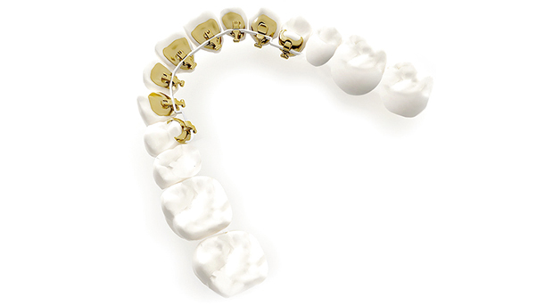
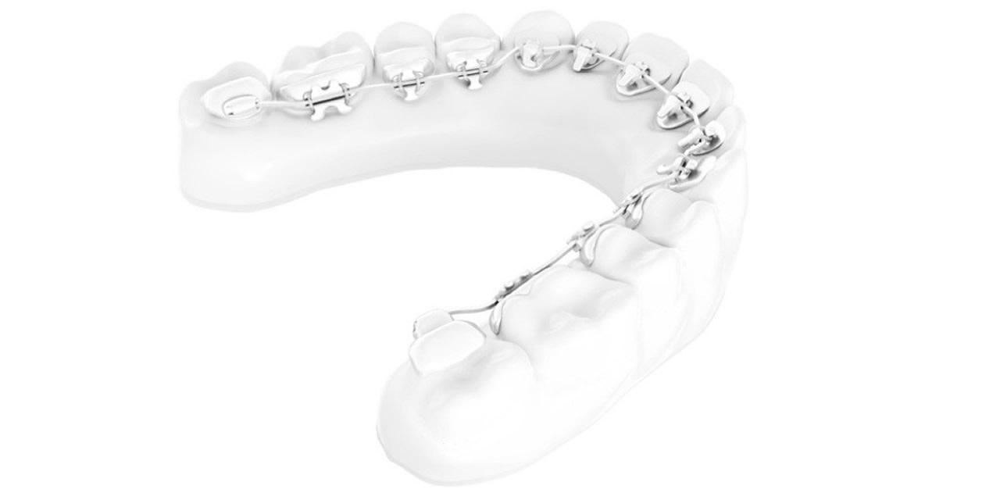
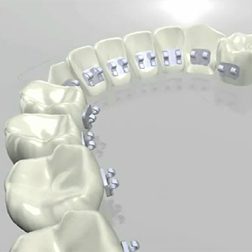

Aparaty lingwalne to leczenie dla WSZYSTKICH
DZIECI, MŁODZIEŻY oraz DOROSŁYCH
Termin ,,lingwalny” zaczerpnięty został z języka łacińskiego i oznacza usytuowanie aparatu w jamie ustnej od strony języka. Istotą techniki lingwalnej jest prowadzenie leczenia w taki sposób, aby zamki oraz elementy aparatu pozostawały niezauważalne.
Dlatego przez cały okres użytkowania aparaty lingwalne pozostają niewidoczne, pozwalając Pacjentom na dyskretne leczenie, swobodny i niczym nieskrępowany uśmiech, a także niczym niezaburzony styl życia.
Już nie musisz martwić się o swój wygląd w czasie leczenia!
Zalety aparatów językowych
- całkowicie niewidoczne aparaty
- wykorzystywane do leczenia wszystkich wad zgryzu
- odpowiednie dla każdego bez względu na wiek
- doskonałe rezultaty leczenia
- skrócenie całkowitego czasu leczenia, a tym samym liczby wizyt
- łatwiejsze utrzymanie higieny
- mniejsze ryzyko próchnicy (powierzchnie językowe zębów są bardziej odporne na demineralizację w porównaniu z powierzchniami wargowymi)
- komfort dla warg i policzków
- mniejsze rozmiary zamków, lepsza adaptacja
- możliwość wizualizacji efektu końcowego leczenia jeszcze przed założeniem aparatu
Systemy aparatów językowych dzieli się na:
Indywidualnie projektowane dla pacjenta tj. Incognito, Incognito Lite oraz aparat Win, Lingualjet
- Incognito – indywidualnie projektowane zamki przy użyciu technologii 3D a następnie odlewane ze stopu złota i irydu. Są one biokompatybilne oraz zapewniają odpowiednie właściwości fizyczne aparatu. Do zamków podobnie jak w klasycznych aparatach montowane są łuki, czyli elementy przenoszące siły oddziaływujące na zęby.

- Incognito Lite – to uproszczona wersja aparatu Incognito, liczba zamków zredukowana jest do 6 - 8 przyklejanych do zębów szczęki lub żuchwy. Aparat przeznaczony jest do leczenia niewielkich wad zgryzu.

- Aparat WIN – indywidualnie projektowane zamki wykonywane ze stali, natomiast elementy bezpośrednio wpływające na korekcję wady zgryzu (łuki) z chromu i kobaltu.

- Lingualjet - to system indywidualnych zamków językowych dopasowanych w technologii 3D, zamki odlewane są ze stopu złota zapewniając pacjentowi optymalny komfort noszenia. W tym systemie stosowany jest łuk płaski.
Standardowe samoligaturujące tj. Forestadent
- Forestadent - to standardowe samoligaturujące aparaty lingwalne. W tym systemie zamki nie są przygotowywane indywidualnie dla pacjenta, przez co skróceniu ulega czas potrzebny na zaplanowanie i przygotowanie do leczenia, zaś założenie aparatu odbywa się podczas pierwszej wizyty. Zmniejszone są koszty oraz liczba wizyt ortodontycznych.
